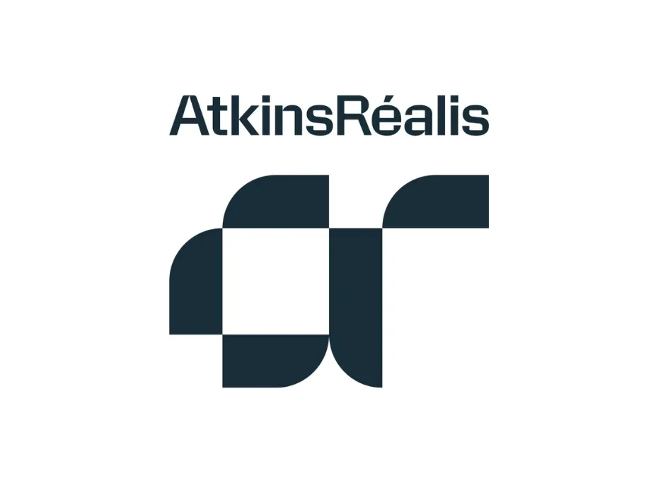

Welcome to my website! My name is Kaif Ahmed and I'm a 5th year Computer Science student at the University of Guelph. This blog will go over the experience I have had during my fourth co-op work term as a Student Engineering Project Coordinator at Atkins Realis(Candu Energy).

AtkinsRealis(Candu Energy) is a world-wide engineering and project management company that focuses on delivering innovative solutions across infrastructure, energy, and various nuclear sectors. Within its nuclear division, Candu Energy focuses on the designs, refurbishment, and improvements of the various CANDU reactors they have. CANDU reactors are Canada's nuclear technology that provide safe, reliable, and low-carbon power energy. Atkins Realis is heavily known for its expertise in reactor life extensions, project execution, and adherence to strict safety standards ensuring that all staff and clients are safe from radiation and other factors. Atkins Realis is a key player in providing and improving clean energy as well as supporting sustainable power generation worldwide.
As a Engineering Project Coordinator/Software Engineer at AtkinsRéalis, my responsibilities during my fourth co-op work term continued to involve collaborating with project management, engineering, and drafting teams to support various projects and ensure that documents and information were accurate, organized, and accessible. Building on the experience I gained during my previous work terms, I was able to take on more technical responsibilities and work more independently on projects. I continued working with document management systems such as MyTrak and worked with Excel spreadsheets and large sets of engineering information to help teams track and organize their work. I was also responsible for reviewing and updating documents, maintaining accurate information, and assisting with project coordination and communication between different teams. I have also worked on other tasks, but due to the confidentiality of AtkinsRealis and its clients, I cannot provide details.
One of the major differences during this work term was the increased amount of software automation work I was given. I worked on creating automated Excel-based tasks that allowed users to drag and drop information into a designated area and have the entries automatically uploaded into SharePoint. This helped reduce the amount of repetitive manual work required from team members and made the process more efficient and consistent. Developing these automated solutions allowed me to apply skills from my Computer Science background to real-world engineering and project management processes. I also had to consider how users would interact with the tools and make sure that the automation was easy to understand and use.
Another project I worked on involved developing a software extraction tool that could extract information from documents and identify specific information requested by the user. The tool was designed to make it easier for users to find relevant information without having to manually review large documents. This project gave me experience working with document information in a more technical way and allowed me to understand how software can be used to improve existing document management processes. I was able to work through different requirements, troubleshoot issues, and make improvements to the tool based on the information that users needed.
Throughout this work term, I also created multiple dashboards using Power BI for different teams within AtkinsRéalis. These dashboards were used to organize and display information in a way that was easier for teams to understand and analyze. I worked with different datasets and determined which information would be most useful to display depending on the team's needs. Creating these dashboards helped me develop my data analysis and visualization skills while also improving my understanding of how technical information can be presented to different audiences. I also continued to participate in meetings and communicate with team members to understand project requirements, provide updates, and ensure that the work I completed aligned with their expectations.
Throughout my fourth work term, I became much more comfortable working independently and taking ownership of the tasks assigned to me. My previous experience at AtkinsRéalis allowed me to understand the company's processes and expectations, which meant that I was able to spend more time focusing on improving processes and developing technical solutions rather than learning the basics of the workplace. I was trusted with more technical projects and was able to use my Computer Science knowledge to create solutions that could benefit different teams. This work term allowed me to further develop my technical, organizational, communication, and problem-solving skills while gaining valuable experience in a professional engineering environment. I have enjoyed continuing my experience at AtkinsRéalis and would be interested in working at the company again in the future because of the opportunities I have been given to learn and contribute to different projects.
Goal 1: Improve software automation and technical problem-solving skills
During my fourth co-op work term at AtkinsRéalis, I wanted to improve my ability to apply my Computer Science knowledge to real-world workplace problems. I was able to achieve this goal by working on several software automation projects that focused on reducing repetitive manual processes. One of the main projects involved creating an Excel-based drag-and-drop process that automatically uploaded entries into SharePoint. This required me to understand the existing workflow, determine how it could be improved, and create an automated solution that was easier and more efficient for users. Working on this project improved my ability to troubleshoot problems, understand user requirements, and develop technical solutions. I also became more confident in working independently and using my programming and software knowledge to improve existing processes. Overall, this work term helped me understand how software automation can be applied outside of traditional software development environments and how technical solutions can improve the efficiency of engineering and project management teams.
Throughout this work term, I wanted to strengthen my ability to work with large amounts of information and present it in a way that could be easily understood by others. I achieved this goal by creating multiple dashboards for different teams using Power BI. I worked with various datasets and determined what information would be most useful for each team to see. Creating these dashboards required me to organize data, identify important information, and present it through visualizations that could help teams understand their projects and information more effectively. I also gained experience understanding that different users may require different types of information depending on their responsibilities. This experience improved my data analysis and visualization skills and gave me a better understanding of how tools such as Power BI can be used in a professional environment to support decision-making and project management.
My third goal was to become more independent when completing projects while continuing to improve my communication and project management skills. Since this was my fourth work term at AtkinsRéalis, I already had a strong understanding of the company's work environment and processes. This allowed me to take greater ownership of the projects assigned to me. I was responsible for understanding requirements, communicating with team members, troubleshooting issues, and completing projects with less direct supervision. I also had to communicate with different teams when developing dashboards and software tools to make sure that the final products met their needs. Through these experiences, I became more confident in asking questions, providing updates, managing my workload, and completing tasks independently. This goal helped me become more dependable and comfortable taking responsibility for larger and more technical projects.
Overall, my fourth co-op work term at AtkinsRealis has been another valuable learning experience that has allowed me to grow significantly both technically and professionally. Compared to my previous work terms, I was given more opportunities to work on software automation, data extraction, and data visualization projects. I was able to apply my Computer Science knowledge to real-world engineering and project management problems by creating automated Excel and SharePoint processes, developing a software extraction tool, and creating Power BI dashboards for different teams. These experiences allowed me to see how software and data can be used to improve existing processes and make work more efficient. I also continued to strengthen my communication, organization, project coordination, and time management skills by working with different teams and managing multiple responsibilities. My previous experience at AtkinsRealis helped me become more independent and confident when completing my tasks, while the new technical projects allowed me to continue expanding my skill set. I am grateful for the opportunities and support I have received throughout my co-op experience at AtkinsRealis and I believe the skills I have gained will be extremely beneficial to my future career in Computer Science and project management.
Working with such incredible individuals throughout this co-op term at Atkins Realis(Candu Energy) has been another incredible experience. I'd like to thank my supervisor, Zheng Aau for continuing to be so supportive and for providing me with opportunities to take on more technical and challenging projects. I would also like to thank the project management, engineering, and drafting teams for their support and for allowing me to contribute to various projects throughout my work term. Finally, I'd like to thank my co-op advisors Kate McRoberts, Laura Gatto and Anne-Marie Zawadzki for all of their support throughout my co-op work terms.